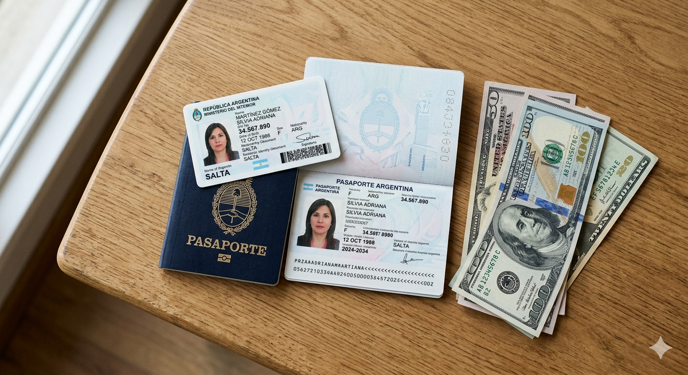

Documentación necesaria para cruzar la frontera en 2026

Una de las preguntas más comunes de quienes viajan por primera vez desde Orán a Bermejo es: ¿Qué documentos necesito llevar? En esta guía te explicamos exactamente qué papeles llevar, qué evitar, y cómo pasar aduana sin problemas.
Documentos esenciales para argentinos
1. DNI argentino vigente (lo más importante)
El DNI es el documento de identidad oficial en Argentina y es obligatorio para cruzar a Bolivia. Debe estar vigente. Si está vencido, deberás tramitar uno nuevo antes de viajar.
¿Y si tengo carnet de conducir? El carnet de conducir es válido como documento complementario, pero no reemplaza al DNI para pasar aduana.
2. Pasaporte (opcional pero recomendado)
Para ciudadanos argentinos NO es obligatorio un pasaporte para entrar a Bolivia. Gracias al acuerdo MERCOSUR, se permite viajar solo con DNI. Sin embargo, llevar pasaporte nunca está de más si tienes uno vigente.
Importante: Si tu DNI está dañado, manchado, o es difícil de leer, definitivamente lleva pasaporte.
3. Documentos de vehículo (si viajas en auto)
Si cruzas en vehículo propio, necesitas:
- Cédula de identidad del vehículo (DNI del auto).
- Permiso de circulación vigente.
- Seguro de responsabilidad civil vigente.
- Comprobante de revisión técnica (si lo pide).
En Bolivia puede haber requisitos adicionales. Consulta en Gendarmería antes de partir si planeas cruzar con vehículo.
Documentación de aduanas: lo que debes saber
Efectivo: Límites y declaración
Límite sin declarar: Puedes ingresar hasta USD 10,000 (o equivalente en otras monedas) sin declarar.
Montos mayores: Si llevas más de USD 10,000, debes declarar ante la aduana boliviana. Esto no es ilegal, solo requiere llenar un formulario. Es importante porque si traes dinero no declarado y te revisar, pueden confiscarlo.
Artículos personales permitidos
- Ropa y accesorios (uso personal).
- Computadora, celular, cámara (uso personal).
- Medicamentos personales (con receta si es controlado).
- Artículos de higiene.
- Libros y documentos.
Artículos prohibidos o restringidos
- Frutas y verduras frescas: Prohibidas sin certificado sanitario.
- Carnes frescas: Prohibidas sin certificado.
- Lácteos: Prohibidos generalmente.
- Armas de fuego: Prohibidas, requieren permisos especiales.
- Drogas: Completamente prohibidas.
- Animales vivos: Requieren vacunas y permisos.
Límites de compra para argentinos
Cuando regresas a Argentina con compras hechas en Bolivia:
- Límite de equipaje de viajero: USD 300 por persona sin pagar impuestos.
- Artículos nuevos arriba del límite: Pagan impuestos de importación en aduana argentina.
- Comprobantes: Guarda los tickets de lo que compraste. La aduana argentina puede pedirlos.
Tip: Si compras muchas cosas, distribuye entre varios miembros de tu grupo para maximizar los límites de equipaje.
Proceso de cruce fronterizo paso a paso
- Argentina (Gendarmería): Muestras tu DNI. Te preguntan si llevas drogas, armas, etc. Generalmente es rápido.
- Chalana: Cruzas el río Bermejo en balsa (5-10 minutos).
- Bolivia (Aduana boliviana): Inspección de equipaje. Pueden pedir comprobante de vacunas, DNI o pasaporte.
- Entrada a Bolivia: Pago de tasa de entrada (algunos pesos o dólares, generalmente bajo).
Tiempo total estimado: 40-80 minutos en días normales. Fines de semana pueden ser 2-3 horas.
Documentos especiales según tu situación
¿Si eres extranjero residente en Argentina?
Necesitas tu DNI de extranjero (DNI-E) o pasaporte válido. El acuerdo MERCOSUR se aplica principalmente a ciudadanos argentinos. Consulta con inmigración si tienes dudas.
¿Si viajas con menores?
Menores argentinos necesitan DNI propio (no sirve el de un adulto). Si no es hijo tuyo, requiere autorización notarial de los padres.
¿Si necesitas vivir en Bolivia por un tiempo?
Para estadías largas, necesitas visa. Consulta en el Consulado de Bolivia en Salta.
Errores comunes que debes evitar
- Llevar DNI vencido: No te dejarán pasar. Renuévalo antes.
- Llevar dinero no declarado: Riesgo de confiscación si hay revisión.
- Intentar pasar artículos prohibidos: Multa y confiscación. No vale la pena.
- No tener comprobantes de compras: En regreso a Argentina, pueden pedir justificativo.
- Llevar medicamentos sin receta: Algunos controlados pueden tener problemas.
Útiles para llevar (no obligatorio pero recomendado)
- Fotocopia de tu DNI (por si lo pierdes).
- Número de teléfono de emergencia.
- Dinero en efectivo (pesos y dólares).
- Medicamentos básicos (si tienes alergias).
- Bloqueador solar y gafas.
Documentación para renovar DNI en Salta
Si tu DNI está vencido, debes renovarlo antes de viajar. En Orán y Salta:
- Trámite en dependencia local del Registro Civil.
- Llevar DNI vencido, comprobante de domicilio, 2 fotos 4x4.
- Tiempo: 15-30 días hábiles.
Conclusión
Para cruzar a Bolivia necesitas poco: un DNI vigente, dinero en efectivo, y los artículos personales que uses regularmente. La aduana no es complicada si eres honesto. Si declara lo que llevas y respetas las prohibiciones, el cruce es rápido.
Última recomendación: Verifica con Gendarmería local o en el sitio de Migraciones Argentina si hay cambios en los requisitos cercanos a tu viaje.
Información actualizada a mayo de 2026. Requisitos pueden cambiar. Verifica siempre con autoridades locales.